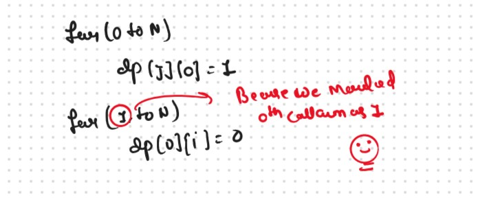

JB TAK FODEGA NHI .... TB TK CHODEGA NHI .... (MAANG)


DPL32 Distinct Subsequences üî•
We are given two strings S1 and S2, we want to know how many distinct subsequences of S2 are present in S1.

If we Talk about this Typle of Problem then only one things Comes into the Our Mind that is Recursion becouse only the Recursion is the Only Method to Find the all the Possible Ways
This is the Frame of the Recursion that we used in the Recursion Portion

Recursice Approch
Steps to form the Recursive SolutionStep 1: Express the problem in terms of indexes.
Step 2: Try out all possible choices at a given index.
Now, i and j represent two characters from strings S1 and S2 respectively. We want to find distinct subsequences. There are only two options that make sense: either the characters represented matched or Not matched
Case 1: When the characters matchS1[i] == S2[j], now as the characters at i and j match, we would want to check the possibility of the remaining characters of S2 in S1 therefore we reduce the length of both the strings by 1 and call the function recursively.
VVVV Important Point
Now, if we only make the above single recursive call, we are rejecting the opportunities to find more than one subsequences because it can happen that the jth character may match with more characters in S1[0…i-1], for example where there are more occurrences of ‘g’ in S1 from which also an answer needs to be explored.
To explore all such possibilities, we make another recursive call in which we reduce the length of the S1 string by 1 but keep the S2 string the same, i.e we call f(i-1,j).
Case 2: When the characters don’t match
Summarized the both Conditions
Step 3: Return the sum of choices
Base Cases
The final pseudocode after steps 1, 2, and 3:
.png)
.png)
Sb Mai He Kru ...
Khud Bhi Kr le Khuch ..... Nalayk
Time & Space Complexity
Time Complexity: O(2^N)Reason: Exponential Time we find out the all the Possible Path
Space Complexity: O(N)
Reason: We are using a recursion stack space(O(N))
Memoization Approch
If we Observe in the recursion tree, we will observe a many number of overlapping subproblems. Therefore the recursive solution can be memoized for to reduce the time complexity.
Steps to convert Recursive code to memoization solution:.png)
.png)
Sb Mai He Kru ...
Khud Bhi Kr le Khuch ..... Nalayk
Time & Space Complexity
Time Complexity:O(N*M)Reason: There are N*M states therefore at max ‘N*M’ new problems will be solved.
Space Complexity: O(N*M) + O(N+M)
Reason: We are using a recursion stack space(O(N+M)) and a 2D array ( O(N*M)).
Tabulation Approch
Tabulation is a ‘bottom-up’ approach where we start from the base case and reach the final answer that we want and Memoization is the Top-down Approch.In Tabulation Approch We Just Creat a DP Array Same as Memoization and Simply Convert the Recurance Relation into the form of the Looping
Steps to convert Recursive Solution to Tabulation one.

.png)
.png)
Sb Mai He Kru ...
Khud Bhi Kr le Khuch ..... Nalayk
Time & Space Complexity
Time Complexity: O(N*M)Reason:There are 2 nested loops
Space Complexity: O(N*M)
Reason: We are using an external array of size ‘N*M’. Stack Space is eliminated.
Space Optimization
If we closelly Observed if any Tabulation Approch we used the Some Limited Stuff like: dp[i][j] = dp[i-1][j-1] + dp[i-1][j] or dp[i][j] = dp[i-1][j] for the finding the our ans then definetly here Spaced Optimization is Possible in that types of Problems. Always Remember
Golden Rule
We have 2 Different Way to Optimized this Problem
Same like the 0/1 and unbounded Knapsack Problem
If we need only two values from the prev row, there is no need to store an entire row. We can work a bit smarter.
We can use the cur row itself to store the required value in the following way:.png)
.png)
Sb Mai He Kru ...
Khud Bhi Kr le Khuch ..... Nalayk
Time & Space Complexity
Time Complexity: O(N*W)Reason: There are three 2 nested loops
Space Complexity: O(W)
Reason: We are using an external array of size ‘W+1’ to store only one row.